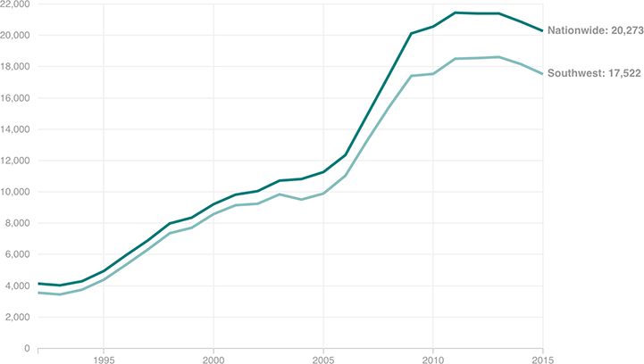

In Two Decades, The Border Patrol Has More Than Tripled In Size
Today, there are are more than 20,000 border patrol agents, with the overwhelming majority of them along the southwestern border. That’s more than triple the nearly 6,000 there were 20 years ago, with especially steep growth after 9/11.
